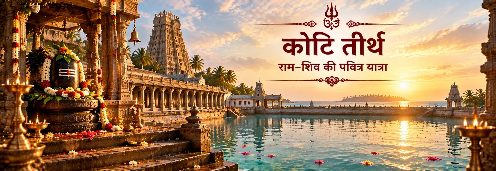

सेतु के प्रमुख तीर्थों में
स्कंद पुराण के सेतु-माहात्म्य में कोटि तीर्थ को सेतु-क्षेत्र के प्रमुख तीर्थों में गिना गया है। तीर्थों की सूची में यह गंगा और गया तीर्थ के बाद आता है।

पवित्र तीर्थ-जल
कोटि तीर्थ रामेश्वरम् की तीर्थ-परंपरा में स्मरण किया जाने वाला एक पवित्र जल-तीर्थ है। स्कंद पुराण के सेतु-माहात्म्य में इसे सेतु-क्षेत्र के प्रमुख तीर्थों में गिना गया है और पवित्र स्नान की तीर्थ-परंपरा में इसे विशेष स्थान दिया गया है।
रामेश्वरम् की राम–शिव कथा के साथ इसे पढ़ने पर इसका अर्थ और गहरा हो जाता है। परंपरा कोटि तीर्थ को रामेश्वर की प्रतिष्ठा के समय अभिषेक में प्रयुक्त पवित्र जल से जोड़ती है; इस प्रकार पवित्र जल, राम की उपासना और शिव-भक्ति एक ही तीर्थ-भूमि में मिलते हैं।
तीर्थ-भावना में पवित्र जल केवल भौतिक तत्व नहीं रहता। वह शुद्धि, अभिषेक, स्मरण और समर्पण का अंग बन जाता है।
पवित्र तीर्थ
स्कंद पुराण के सेतु-माहात्म्य में कोटि तीर्थ को सेतु-क्षेत्र के प्रमुख तीर्थों में गिना गया है। तीर्थों की सूची में यह गंगा और गया तीर्थ के बाद आता है।
बाद की स्थल-परंपरा कोटि तीर्थ को राम की शिव-उपासना से सीधे जोड़ती है: रामेश्वर लिंग के अभिषेक के लिए यहाँ पवित्र जल प्रकट होने की कथा मिलती है।
सेतु-माहात्म्य रामेश्वरम् की भूमि को बार-बार तीर्थ-स्नान, पूजा और तीर्थयात्रा के आध्यात्मिक उद्देश्य के माध्यम से देखता है। कोटि तीर्थ उसी व्यापक पवित्र जल-परंपरा का हिस्सा है।
इसकी गहरी प्रतीकात्मकता भक्ति में है: राम श्रद्धा से शिव की ओर आते हैं और जल वह माध्यम बनता है जिसके द्वारा उपासना पूर्ण होती है।
शास्त्र और परंपरा
कोटि तीर्थ के लिए सबसे प्रत्यक्ष शास्त्रीय सामग्री स्कंद पुराण के सेतु-माहात्म्य से मिलती है, न कि वाल्मीकि रामायण से। सेतु के तीर्थों के वर्णन में कोटि तीर्थ को प्रमुख पवित्र जल-स्थलों में गिना गया है। बाद का एक अध्याय इसे अधिक विशिष्ट राम–शिव कथा से जोड़ता है: रावण-वध के बाद राम रामेश्वर की स्थापना और पूजा करना चाहते हैं; अभिषेक के लिए उपयुक्त जल की आवश्यकता होने पर गंगा का आवाहन किया जाता है और वह उस स्थान पर प्रकट होती हैं जिसे कोटितीर्थ कहा जाता है।
यह स्रोत-भेद महत्वपूर्ण है। वाल्मीकि रामायण राम की समुद्र-यात्रा, सेतु और युद्ध का वर्णन करती है, लेकिन कोटि तीर्थ की विस्तृत उत्पत्ति-कथा बाद की रामेश्वरम् स्थल-परंपरा में मिलती है, जिसे स्कंद पुराण सुरक्षित रखता है। यह भक्ति-परंपरा के महत्व को कम नहीं करता; बल्कि यह स्पष्ट करता है कि कौन-सी कथा किस शास्त्रीय परत से आती है।
चार आध्यात्मिक संकेत
जल भक्त को भीतर के भार को छोड़कर अधिक निर्मल हृदय से उपासना आरंभ करने का संकेत देता है।
रामेश्वरम् में पवित्र जल की परंपरा स्वाभाविक रूप से शिव के अभिषेक और भक्ति-अर्पण की ओर मन ले जाती है।
तीर्थ स्मरण का स्थान भी है। कोटि तीर्थ रामेश्वरम् में राम की उपासना की स्मृति को जीवित रखने वाली परंपरा का हिस्सा है।
राम–शिव की तीर्थ-भूमि यह स्मरण कराती है कि श्रद्धा संप्रदाय की सीमाओं से ऊपर उठकर साझा आध्यात्मिक भाषा बन सकती है।
एक शांत मनन
कोटि तीर्थ को केवल देखने योग्य स्थान के रूप में नहीं, बल्कि आंतरिक तीर्थयात्रा के प्रतीक के रूप में भी देखा जा सकता है। जल किसी एक रूप से चिपकता नहीं; वह बहता है, ग्रहण करता है, शुद्ध करता है और फिर व्यापक पूर्णता में लौट जाता है। रामेश्वरम् की राम–शिव परंपरा में यह प्रवाह समर्पण की सुंदर स्मृति बन जाता है।
मनन करें: “मेरे भीतर जो अशुद्ध है वह धुल जाए और मेरा हृदय स्वयं एक अर्पण बन जाए।”
अक्सर पूछे जाने वाले प्रश्न
कोटि तीर्थ रामेश्वरम्–सेतु की तीर्थ-परंपरा से जुड़ा एक पवित्र जल-तीर्थ है। स्कंद पुराण इसे सेतु-क्षेत्र के प्रमुख तीर्थों में गिनता है।
सेतु-माहात्म्य की परंपरा में लंका-विजय के बाद राम को रामेश्वर के अभिषेक के लिए पवित्र जल की आवश्यकता होती है। गंगा का आवाहन किया जाता है और वह कोटितीर्थ नामक स्थान पर प्रकट होती हैं। इस प्रकार जल-तीर्थ राम की शिव-उपासना से जुड़ जाता है।
इस पृष्ठ पर दी गई विस्तृत उत्पत्ति-कथा बाद की स्कंद पुराणीय सेतु-माहात्म्य परंपरा से आती है। इसे वाल्मीकि रामायण का प्रसंग नहीं बताना चाहिए।
रामेश्वरम् की तीर्थ-परंपरा अनेक तीर्थों के जाल के चारों ओर विकसित हुई है, जो स्नान, पूजा और स्मरण से जुड़े हैं। सेतु-माहात्म्य ऐसे अनेक पवित्र जल-स्थलों की लंबी सूची देता है, जिससे स्वयं भूगोल तीर्थयात्रा का हिस्सा बन जाता है।
यात्रा आगे बढ़ाएँ
कोटि तीर्थ एक बहुत बड़े पवित्र मानचित्र का एक बिंदु है। यात्रा रामेश्वरम् के अन्य जल-तीर्थों, राम के सेतु की स्मृति, गंधमादन पर्वत और उन अनेक स्थलों से आगे बढ़ती है जहाँ राम की शिव-भक्ति का स्मरण किया जाता है। ये सभी मिलकर राम–शिव भक्ति की एक जीवित तीर्थयात्रा बनाते हैं।